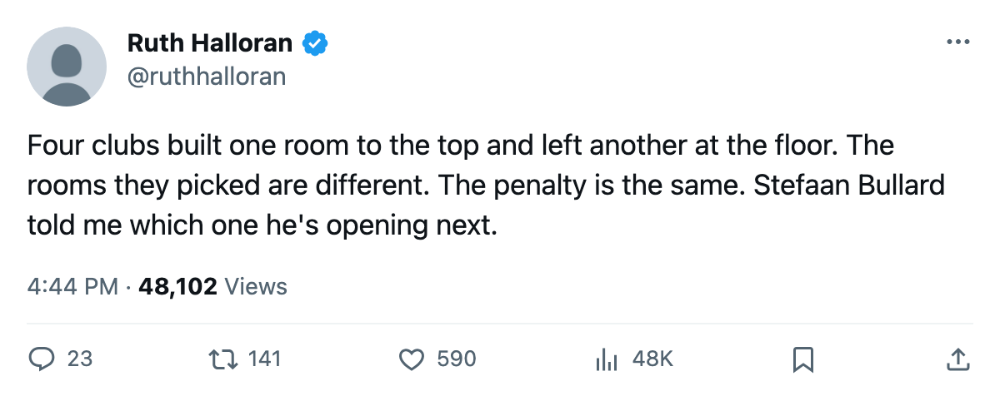
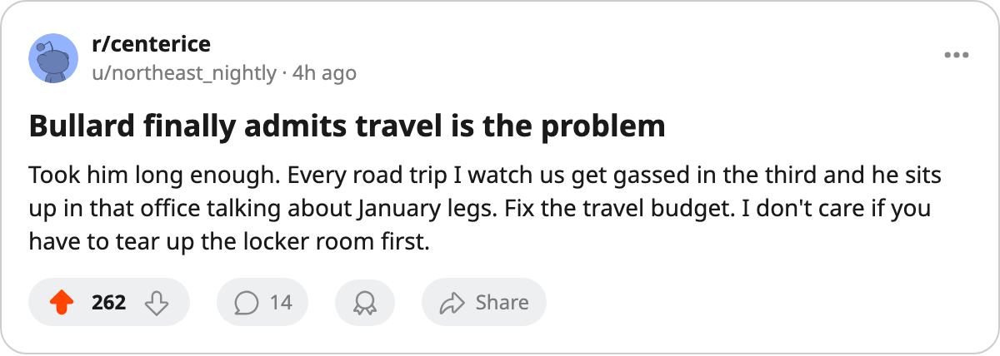

The Ceiling Track: Montreal has the joint-best workout rink in the league and the joint-worst travel room
Stefaan Bullard's club went as high as any club has reached on workout and as low as the save allows on travel. He told The Tunnel the next upgrade is travel.
 Ruth HalloranBusiness of hockey · The Building
Ruth HalloranBusiness of hockey · The BuildingMontreal's workout rink is at level 4, the highest any club in this league has built on that track.  Dallas Stars is the only other club at 4. The tuning file reads +0 at that level. No club has reached the next step.
Dallas Stars is the only other club at 4. The tuning file reads +0 at that level. No club has reached the next step.
Montreal's travel room sits at 0. The file charges -6 on every road game. Six clubs share that floor.
Stefaan Bullard told The Tunnel's Marcus Bell this week what comes next.
"I built that room first because I needed it first," Bullard said of the workout rink. "You don't get that in October. You get it in January when your legs are gone and you've got 4 minutes left."
Two upgrades, one room
The league files no news for a facility upgrade. The record of these is visible only as a difference between two saves, and has held since December 4, 2004. Montreal moved twice in that window, both times on workout. The first came between December 7 and December 8. The second came in the May 29 to May 31 window, the largest single upgrade event on record, which saw 24 clubs touch at least one room.
Neither upgrade touched travel.
Four clubs built one room and left another at the floor
Montreal is one of four clubs that built a single live track to level 4 or above and left another at 0. Each chose a different room for the ceiling and a different room for the floor. The live sum adds the modifiers from equipment, workout, practice and travel, the four tracks that move a rating.
| club | best room | level | floor room | level | live sum | payroll | profit |
|---|---|---|---|---|---|---|---|
 Washington Capitals Washington Capitals | travel | 5 (+1) | practice | 0 (-6) | -12 | $56.89M | $28.13M |
| Dallas Stars | workout | 4 (+0) | equipment | 0 (-6) | -12 | $58.02M | $27.39M |
 Detroit Red Wings Detroit Red Wings | practice | 5 (+1) | travel | 0 (-6) | -13 | $61.19M | $29.65M |
 Montreal Canadiens Montreal Canadiens | workout | 4 (+0) | travel | 0 (-6) | -14 | $54.89M | $17.76M |
Washington Capitals and Dallas Stars both land at -12 on the live sum. Detroit Red Wings sits at -13. Montreal's -14 is the deepest of the four. The on-the-ice figure, the facility term averaged across each club's own players, puts Montreal at -1.66 against Washington's -1.75 and Detroit's -2.59.
Montreal Canadiens pays $54.89M, the 20th-largest payroll in the league. Revenue sits at $26.00M, the same floor  New York Islanders,
New York Islanders,  Tampa Bay Lightning,
Tampa Bay Lightning,  Phoenix Coyotes and
Phoenix Coyotes and  Atlanta Thrashers report. The ticket is $79, one of four clubs at that price and the second-cheapest seat behind Buffalo at $78. The season profit came in at $17.76M.
Atlanta Thrashers report. The ticket is $79, one of four clubs at that price and the second-cheapest seat behind Buffalo at $78. The season profit came in at $17.76M.
Bullard gave his own framing for that number. "$79, it's what this market holds. And I'll tell you, $26M in revenue, we cleared $17.76M on the bottom line. That's the number I look at."
The road penalty
The travel track moves every attribute on the road. A club at level 0 takes -6 on all of them, every away night. The six clubs carrying that floor have live sums ranging from -13 to -19.  Los Angeles Kings, at -19, holds the lowest facility sum in the league.
Los Angeles Kings, at -19, holds the lowest facility sum in the league.
Bullard spoke plainly when Marcus Bell pressed him on travel.
"Right now we're taking that penalty every road trip. Every single one. I know what it costs us. I know exactly what it costs us. And I'm telling you, it's next."
What the calendar has as the trade deadline falls 157 days from today, on March 19. Bullard does not tie his room-building to the roster calendar.
"I don't build rooms on the deadline. I build them when I can. The deadline is for the roster. The rooms are something else. One at a time."

